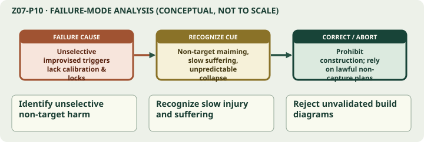

Z07-P10 · Traps and snares · New manuscript
Why Improvised Traps and Snares Fail Welfare and Safety Tests
Document the ethical, legal, and physical failures of improvised snares, deadfalls, and pit traps.
When it applies · Evaluating traditional survival-manual trap myths through modern science and law.
Equipment · None—hazard-awareness reference only.

Actions
- Recognize that improvised snares, deadfall rocks, and spring-pole contraptions lack calibrated pan tension, stopping locks, and species selectivity, causing prolonged choking, maiming, or non-target capture.[L02, L11]
- Understand that deadfalls and tensioned branches also endanger hikers, searchers, children, and the builder themselves through sudden unpredictable trigger collapse.[L10, L11]
- Exclude improvised construction specs entirely from field guidance and escalate any unresolved ethical or historical questions to wildlife-welfare specialists.[L02, L11]
Failure recognition · Treating outdated survival-book trap sketches as benign crafts encourages cruel, illegal, and physically dangerous devices on public lands.[L01, L02, L11]
Verify · Ethical, welfare, legal, and bystander-injury failures of improvised devices are clearly stated with zero build instructions.[L02, L11]
Stop or change course · Stop and refuse to construct, test, or demonstrate injurious improvised traps or snares in outdoor training.[L01, L02, L11]
Evidence and editorial notes
- L01 · Minnesota DNR · Minnesota Trapping Regulations and Fur Harvest Rules (Current web edition)
- Section: Minnesota trapping licensing, seasons, and statutory limits · Conditions: Any regulated trapping activity or legal reference in Minnesota
Support: Trapping is strictly regulated by license, season, species, trap type, set location, check intervals, and landowner permission; unauthorized trapping is illegal.
Limitations: Emergency narratives never create an exemption to set traps or snares; verify current statute and DNR handbook every season. · Conflicting evidence: None noted.
Editorial note: Primary Z07 legal boundary. · Specialist reviewer: Wildlife law and DNR enforcement reviewer
Primary source · checked 2026-11-25 - L02 · Association of Fish & Wildlife Agencies · Best Management Practices for Trapping and Furbearer Welfare (Current web edition)
- Section: AFWA Best Management Practices for animal welfare and selectivity · Conditions: Evaluating trapping principles, welfare, and non-target risk
Support: AFWA BMPs evaluate regulated devices on animal welfare, efficiency, selectivity, user safety, and practicality through scientific testing.
Limitations: Improvised traps and snares lack scientific welfare testing and selectivity controls, causing severe injury and non-target capture. · Conflicting evidence: None noted.
Editorial note: Anchors Z07 welfare & conceptual classification without building instructions. · Specialist reviewer: Wildlife welfare scientist
Primary source · checked 2026-11-25
Current assessment · A04-L02 (2026-11-25) · Bounded support confirmed from an alternate source (A04): Supports regulated-device evaluation criteria in the program. Minnesota hunting index is the wrong evidence section. No device construction or authorization follows. Limits: Specialist review PENDING (Wildlife welfare scientist); publication HOLD. All release decisions pending. - L10 · Minnesota DNR · Minnesota Trapping Regulations and Fur Harvest Rules (Current web edition)
- Section: Human and pet hazard recognition around lawful trapping areas · Conditions: Walking dogs or hiking in open public-use lands during furbearer seasons
Support: Keep dogs on short leashes on open multi-use lands during autumn/winter trapping seasons, avoid bait piles and shoreline culverts, and carry vet contact info.
Limitations: Body-gripping and cable devices present rapid fatal risk to unleashed pets; prevention via leashing is far safer than emergency release. · Conflicting evidence: None noted.
Editorial note: Core Z07 bystander & pet hazard prevention. · Specialist reviewer: Veterinary and outdoor-safety reviewer
Primary source · checked 2026-11-25 - L11 · Association of Fish & Wildlife Agencies · Best Management Practices for Trapping and Furbearer Welfare (Current web edition)
- Section: Conceptual classification of historic vs regulated capture categories · Conditions: Educational overview of mechanical hazard types without construction specs
Support: Historical and regulated devices fall into restraining (foothold, cage, cable restraint) and killing (body-grip) hazard classes with distinct spring-energy risks.
Limitations: Conceptual awareness supports hazard recognition only and must never include trigger dimensions, wire specs, or placement instructions. · Conflicting evidence: None noted.
Editorial note: Enforces Z07 no-actionable-construction editorial boundary. · Specialist reviewer: Safety and wildlife ethics reviewer
Primary source · checked 2026-11-25
Source lineage · New manuscript (Z07 P18 animal welfare) · Classification · New manuscript.